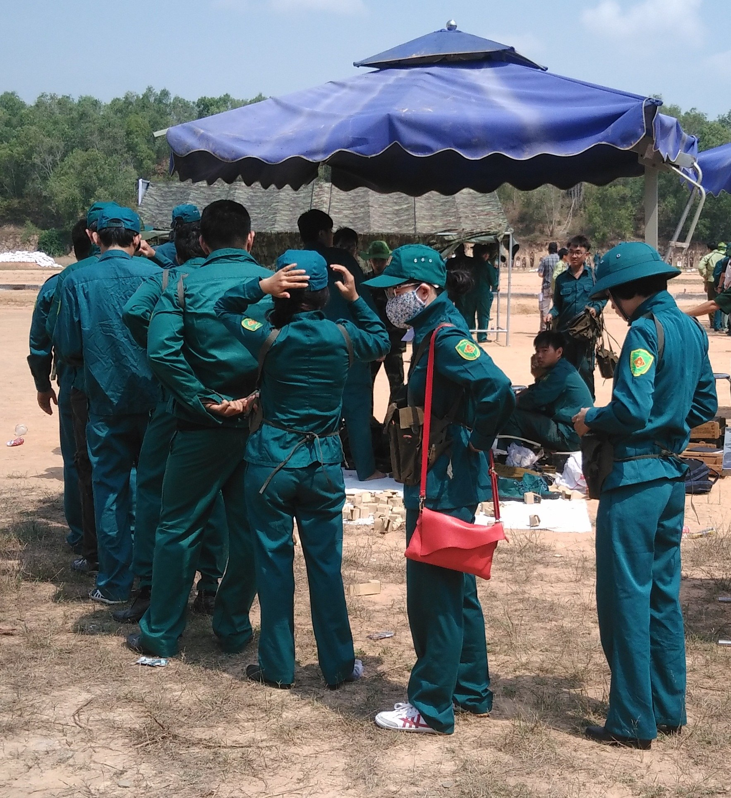
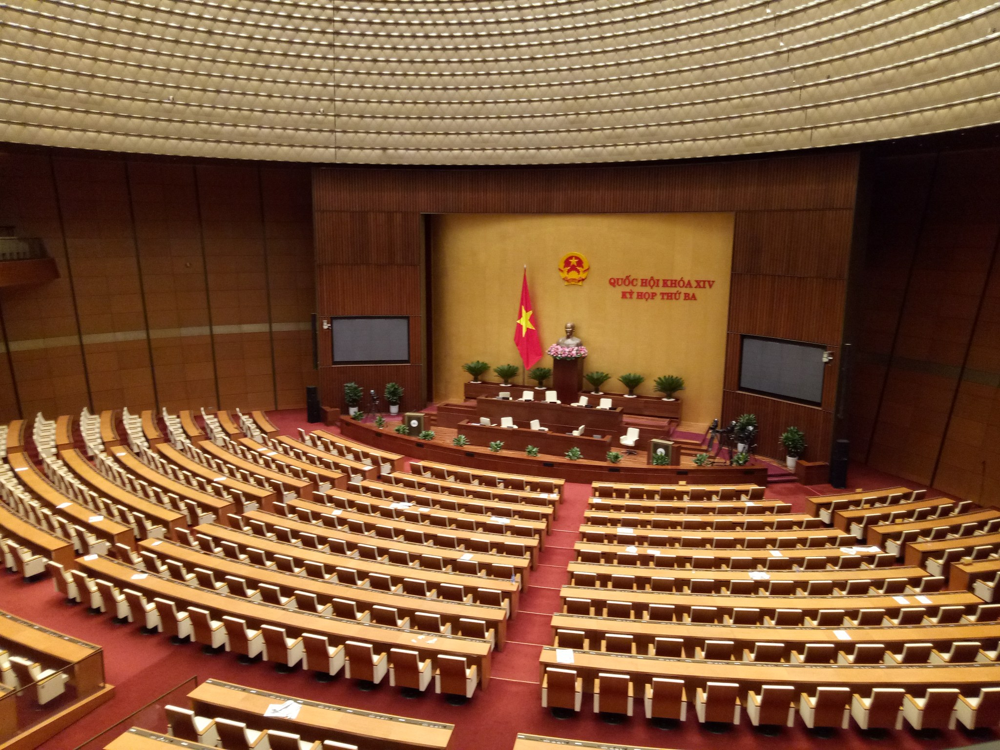
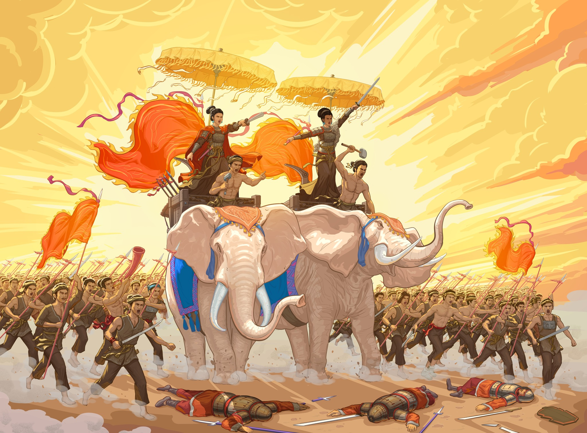
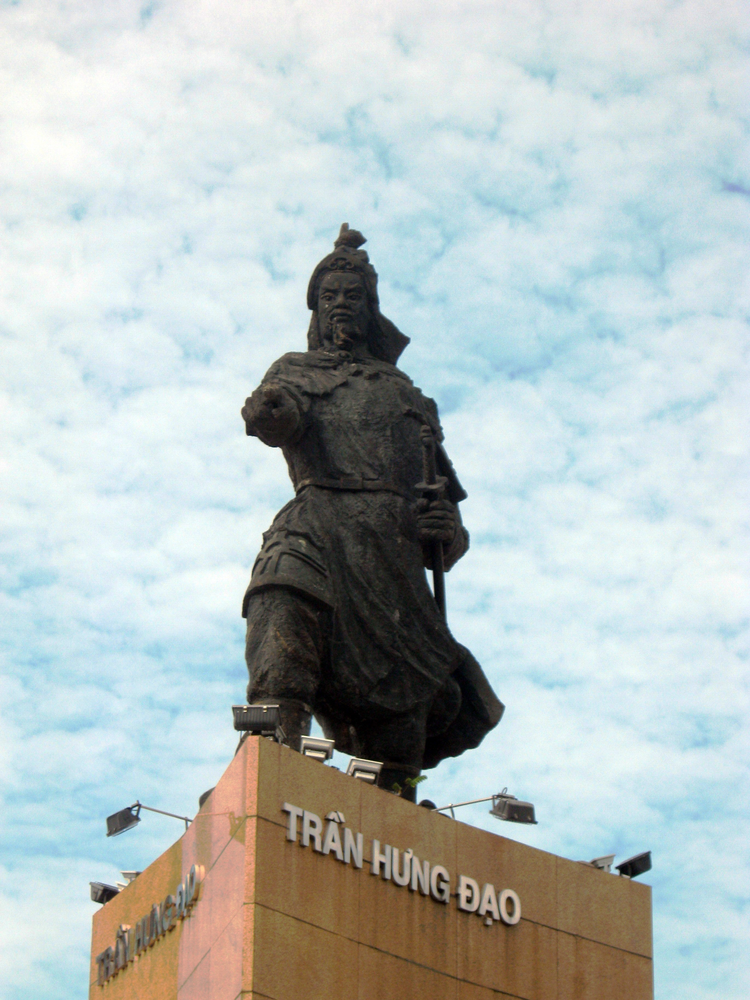
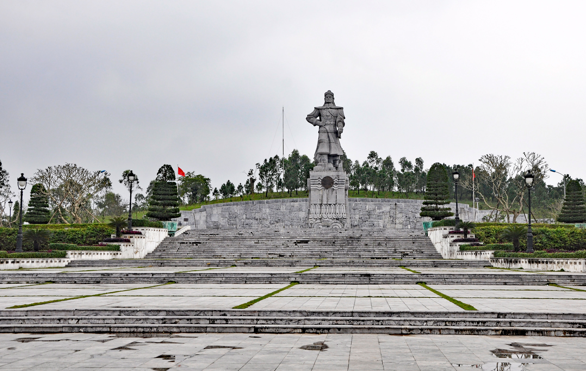
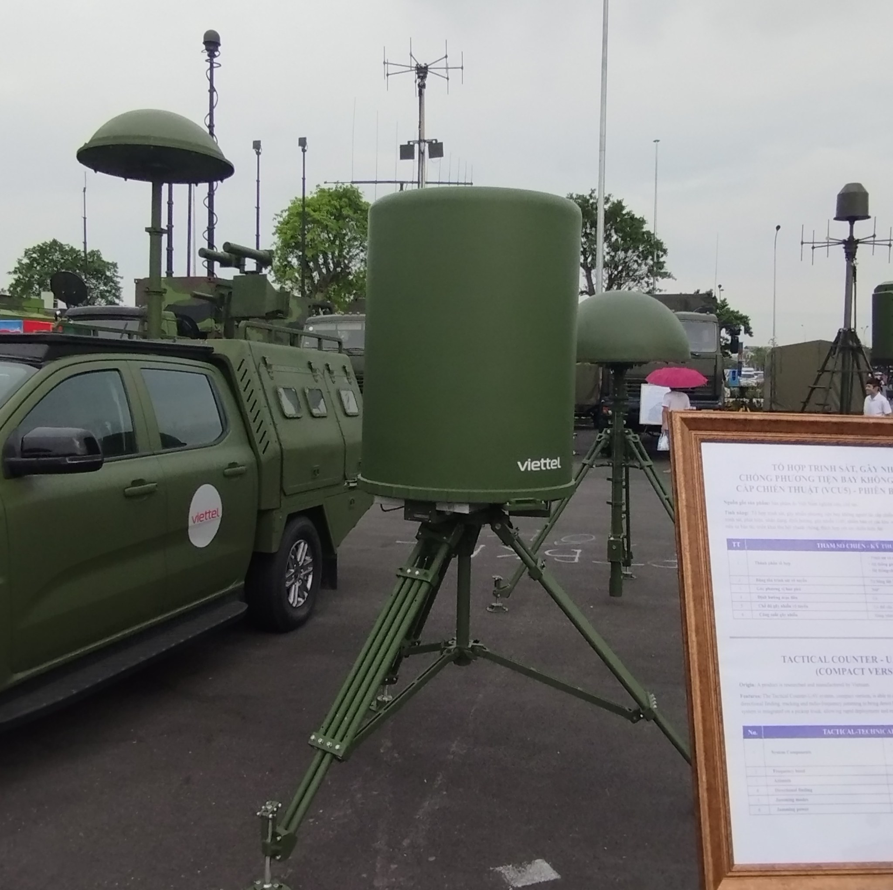

Truyền Thống & Nghệ Thuật Đánh Giặc Của Ông Cha Ta
Cội nguồn lịch sử: Văn hóa Đông Sơn, nỏ thần Cổ Loa và quy luật "Dựng nước đi đôi với giữ nước".
4 Trụ cột quân sự tinh hoa: Thế trận lòng dân, tiến công chủ động, dĩ đoản chế trường và "Tâm công" hòa hiếu.
Liên hệ sinh viên CNTT: Không gian mạng là Mặt trận thứ 5; vận dụng binh pháp vào Zero Trust & bảo vệ chủ quyền số.
Hành Trình Khám Phá Nghệ Thuật Đánh Giặc Đến Kỷ Nguyên Số
Phần 1: Đất nước buổi đầu lịch sử & Quy luật "Dựng nước đi đôi giữ nước".
Phần 2: 4 Yếu tố quyết định hình thành nghệ thuật quân sự độc đáo.
Phần 3: Các cuộc khởi nghĩa & Chiến tranh giữ nước tiêu biểu của dân tộc.
Phần 4: 4 Trụ cột tinh hoa nghệ thuật quân sự truyền thống Việt Nam.
Phần 5: Liên hệ thực tiễn sinh viên Khối ngành Công nghệ Thông tin (CNTT).

Vị Trí Địa Chiến Lược "Ngã Tư Đường" & Văn Minh Văn Lang
Địa bàn huyết mạch Đông Nam Á: Nằm ở ngã tư giao lưu hàng hải quốc tế; là bàn đạp tiến xuống phương Nam của các triều đại phong kiến bành trướng phương Bắc.
Nền nông nghiệp lúa nước & Đúc đồng: Văn minh sông Hồng, văn hóa Đông Sơn đạt đỉnh cao rực rỡ với Trống đồng biểu tượng cho quyền lực và kỹ thuật luyện kim đỉnh cao.
Ý thức cộng đồng & Trị thủy: Sự gắn kết keo sơn của các gia đình, làng/chạ để cùng nhau đắp đê ngăn lũ, khai hoang và chống thú dữ, bảo vệ xóm làng.
Kiến Trúc Thành Cổ Loa & Hỏa Lực Nỏ Thần Liên Châu
Dời đô về Cổ Loa (Đông Anh, Hà Nội): An Dương Vương lựa chọn vị trí trung tâm đồng bằng màu mỡ, án ngữ tuyến thủy bộ chiến lược của đất nước.
Kiến trúc thành lũy 3 vòng xoáy trôn ốc: Thành Ngoại (8km), Thành Trung (6.5km), Thành Nội khép kín; kết hợp hào sâu nối thông sông Hoàng Giang cho thủy binh cơ động.
Công nghệ nỏ Liên Châu (Nỏ thần): Lẫy nỏ cơ học bắn nhiều mũi tên một lúc; hàng vạn mũi tên đồng Cầu Vực tạo bước nhảy vọt về hỏa lực tầm xa áp đảo giặc thù.
Quy Luật Tất Yếu: "Dựng Nước Luôn Đi Đôi Với Giữ Nước"
Quy luật sinh tồn ngàn năm: Trong suốt chiều dài lịch sử, dân tộc Việt Nam liên tục phải đối đầu với các đế chế xâm lược lớn mạnh, hung hãn hơn gấp bội lần.
Không tách rời Kinh tế & Quốc phòng: Muốn tồn tại để cày cấy làm ăn thì bàn tay cầm cày của người nông dân cũng phải luôn sẵn sàng cầm chắc ngọn gươm bảo vệ xóm làng.
Thời bình lo việc phòng bị: Dưỡng sức dân, phát triển kinh tế làm giàu quốc khố để khi quốc biến lập tức chuyển hóa toàn bộ sức mạnh nhân lực và vật lực cứu nguy Tổ quốc.

Địa Hình Hiểm Trở Hóa Giải Kỵ Binh & Chiến Xa Của Giặc
Địa hình phân cắt mạnh mẽ: 3/4 là đồi núi rừng rậm, sông ngòi đầm lầy chằng chịt, khí hậu nhiệt đới gió mùa nóng ẩm, mưa nguồn thác lũ gây dịch bệnh cho giặc xứ lạnh.
Vô hiệu hóa sở trường kỵ binh: Chiến xa cồng kềnh và đội hình dàn quân quy mô lớn của quân xâm lược phương Bắc bị bẻ gãy, rơi vào thế cô lập, sa lầy kiệt quệ.
Nảy sinh nghệ thuật đánh rừng núi & Thủy chiến: Cha ông ta phát triển lối đánh tập kích, phục kích, giấu quân nơi hiểm địa và nghệ thuật thủy chiến bậc thầy (Bạch Đằng, Rạch Gầm).
Quốc Sách "Ngụ Binh Ư Nông" – Dưỡng Sức Dân Để Giữ Nước
Kinh tế nông nghiệp quy mô nhỏ: Nguồn dự trữ hạn chế, triều đình không thể nuôi một đội quân thường trực khổng lồ quanh năm mà không gây kiệt quệ tài chính quốc gia.
Thời bình luân phiên cày cấy: Binh lính về làng làm ruộng sản xuất, tự túc lương thực, giảm gánh nặng ngân khố mà đất nước vẫn no ấm, sung túc.
Thời chiến tập hợp thần tốc: Nhận lệnh điều động lập tức xung trận; người nông dân cày ruộng nhanh chóng trở thành người lính tinh nhuệ bảo vệ mảnh đất của chính mình.
Thế Trận Lòng Dân & Triết Lý "Lấy Đoản Binh Chế Trường Trận"
Tinh thần yêu nước & Khối đại đoàn kết: Từ việc chung tay đắp đê trị thủy đến chống giặc ngoại xâm đã hình thành "Thế trận lòng dân" vững chắc, cả nước chung một lòng.
Thực tế bất đối xứng lực lượng: Nước nhỏ đối chọi nước lớn, quân ít chọi quân đông, khí tài đối phương vượt trội; buộc cha ông ta không đối đầu tiêu hao dàn trận.
Phương châm tác chiến bất hủ: "Lấy ít địch nhiều, lấy nhỏ thắng lớn, lấy yếu chống mạnh, lấy đoản binh chế trường trận" - Dùng đoản đao, cận chiến bẻ gãy ngọn giáo dài của giặc.

Hào Khí Quật Khởi Bền Bỉ Khẳng Định Quyền Độc Lập Dân Tộc
Khởi nghĩa Hai Bà Trưng (Năm 40): Tiếng pháo lệnh đập tan ách thống trị tàn bạo của nhà Hán, thu hồi 65 thành trì; khẳng định sức mạnh và quyền tự chủ đầu tiên của dân tộc.
Bà Triệu (248) & Lý Bí (542): Tuyên ngôn "Cưỡi cơn gió mạnh, đạp luồng sóng dữ"; lập nên nhà nước Vạn Xuân tự chủ, khẳng định giang sơn Đại Việt độc lập muôn năm.
Mai Thúc Loan (722) & Phùng Hưng (766 - 791): Bền bỉ nổi dậy làm rung chuyển nền đô hộ phương Bắc, hun đúc ý chí quật cường chuẩn bị cho mốc son Bạch Đằng lịch sử.

Chiến Thắng Bạch Đằng (938) – Chấm Dứt Đêm Trường Bắc Thuộc
Nắm chắc quy luật thủy triều: Ngô Quyền nghiên cứu kỹ lưỡng mực nước lên xuống của sông Bạch Đằng để chọn đúng thời khắc quyết định chuyển bại thành thắng.
Bãi cọc nhọn bọc sắt cắm ngầm: Đẵn gỗ lim bịt sắt cắm chìm dưới lòng sông hiểm trở, giấu kín dưới làn nước biển dâng cao khi thủy triều đạt đỉnh.
Thuyền nhẹ khiêu chiến giả thua: Nhử hạm đội Hoằng Thao vượt bãi cọc; khi triều rút, dốc tổng lực phản công ép toàn bộ chiến thuyền giặc đâm thủng vào bãi cọc nhọn.
Tư Tưởng "Tiên Phát Chế Nhân" & Phòng Tuyến Sông Như Nguyệt
Thời Tiền Lê (981) - Lê Hoàn: Trực tiếp chỉ huy quyết liệt trên cả mặt trận thủy và bộ, đánh bại đạo quân xâm lược nhà Tống, củng cố nền độc lập non trẻ.
Tư tưởng chủ động "Tiên phát chế nhân": Lý Thường Kiệt chủ trương "Ngồi yên đợi giặc không bằng đem quân đánh trước để chặn mũi nhọn của giặc", tập kích căn cứ Ung Châu.
Phòng tuyến sông Như Nguyệt & Thơ thần: Xây chiến lũy tre vững chắc chặn 30 vạn quân Tống; kết hợp đòn tâm lý chiến "Nam quốc sơn hà" đập tan ý chí quân thù.
Chiến Lược "Vườn Không Nhà Trống" & Hào Khí Đông A
Đánh bại đế chế kỵ binh hung hãn nhất: Đội quân bách chiến bách thắng san phẳng từ Á sang Âu đã 3 lần thất bại hoàn toàn trước quân dân nhà Trần.
Chiến lược "Thanh dã" (Vườn không nhà trống): Toàn dân sơ tán triệt để, triệt phá kho lương thảo, đánh trúng điểm yếu hậu cần xa xôi khiến giặc đói ăn dịch bệnh.
Hội nghị Diên Hồng & Bạch Đằng 1288: Trưng cầu ý dân với muôn người cùng hô vang "ĐÁNH!"; kết thúc bằng chiến thắng Bạch Đằng 1288 của Hưng Đạo Đại Vương.

Khởi Nghĩa Lam Sơn & Cuộc Hành Quân Thần Tốc Tây Sơn
Khởi nghĩa Lam Sơn (1407 - 1427): Lê Lợi và Nguyễn Trãi lãnh đạo cuộc chiến giải phóng trường kỳ; đi từ du kích rừng núi Chí Linh đến quyết chiến Chi Lăng - Xương Giang.
Hành quân thần tốc Tây Sơn (1789): Hoàng đế Quang Trung chỉ huy đạo quân hành quân thần tốc hàng trăm cây số từ Huế ra Thăng Long đúng dịp Tết Kỷ Dậu.
Đại phá 29 vạn quân Thanh: Đánh úp táo bạo, bất ngờ đập tan các đồn lũy Ngọc Hồi - Đống Đa, quét sạch quân xâm lược chỉ trong 5 ngày đêm thần kỳ.

Chủ Động Tiến Công & Sức Mạnh Vô Địch Của Toàn Dân
Tiến công tích cực, chủ động phòng ngự: Không chờ giặc đến mới đánh; liên tục quấy rối, chia cắt, triệt phá đường tiếp tế khiến quân thù mỏi mệt.
Tránh mũi nhọn lúc giặc đang hăng: Chủ động rút lui chiến lược bảo toàn sinh lực, chọn đúng thời điểm địch suy vi để chuyển sang phản công tổng lực.
Thế trận lòng dân – Trăm họ đều là binh: "Vua tôi đồng lòng, anh em hòa mục, cả nước góp sức, giặc tự nhiên tan" - Sức mạnh quân sự nằm sâu trong lòng dân.
Dĩ Đoản Chế Trường & Nghệ Thuật "Tâm Công" Ngoại Giao
Lấy sở trường của ta đánh sở đoản của địch: Dùng vũ khí cận chiến, đoản đao, phục kích, đánh đêm và thủy chiến để triệt tiêu cung tên tầm xa và dàn trận của giặc.
"Tâm công" (Đánh vào lòng người): Nguyễn Trãi nêu cao tư tưởng nhân nghĩa: "Đem đại nghĩa để thắng hung tàn, lấy chí nhân để thay cường bạo"; viết thư dụ hàng làm tan rã giặc từ bên trong.
Mở đường hòa hiếu sau thắng lợi: Chủ động cấp ngựa, cấp thuyền cho quân bại trận rút về an toàn, giữ gìn hòa khí lâu dài để nhân dân được yên ổn làm ăn.
Không Gian Mạng (Cyberspace) – Chiến Trường Thứ 5 Kỷ Nguyên Số
Chiến trường không khói súng: Bên cạnh 4 không gian truyền thống (Đất liền, Biển đảo, Vùng trời, Vũ trụ), không gian mạng là mặt trận thứ 5 có tính hủy diệt và đe dọa trực tiếp an ninh quốc gia.
Tê liệt hạ tầng trọng yếu: Các đòn tấn công APT và mã độc có thể đánh sập lưới điện quốc gia, hệ thống thanh toán tài chính ngân hàng, viễn thông và đài chỉ huy quân sự.
Chiến tranh thông tin & Deepfake: Sử dụng tin giả (Fake News), bot mạng xã hội để thao túng dư luận, xuyên tạc lịch sử, kích động chia rẽ khối đại đoàn kết dân tộc.
| Binh Pháp Cổ Xưa | Ứng Dụng Trong Kỹ Thuật An Ninh Mạng Hiện Đại |
|---|---|
|
"Vườn không nhà trống" Thanh dã chiến lược |
Zero Trust & Phân vùng dữ liệu (Data Isolation): Không tin tưởng bất kỳ ai; phân đoạn mạng và mã hóa đầu cuối. Khi hacker đột nhập chỉ thấy "nhà trống" và dữ liệu đã mã hóa; sao lưu phân tán (DR) phục hồi tức thì. |
|
"Tiên phát chế nhân" Chủ động đi trước |
Threat Hunting & AI-Driven Security: Thay vì bị động chờ vá lỗi, chủ động rà quét mã nguồn và săn lùng lỗ hổng 0-day; ứng dụng AI/Machine Learning để phát hiện và ngăn chặn hành vi trinh sát quét cổng sớm. |
|
"Dĩ đoản chế trường" Lấy ít địch nhiều |
Honeypot & Tự động hóa phòng thủ (SOAR): Dùng bẫy mật ảo đánh lừa tin tặc sa vào mê cung để thu thập mẫu mã độc; viết kịch bản tự động hóa để đội ngũ nhỏ kỹ sư bảo vệ toàn bộ hạ tầng khổng lồ. |
|
"Thủy chiến Bạch Đằng" Thiên thời - Địa lợi |
Cloud Native & Chống Tấn Công Phân Tán DDoS: Hệ thống phân tán đa vùng (Multi-Region), tường lửa WAF và cân bằng tải (Load Balancer) để phân tán, bóp nghẹt và vô hiệu hóa lưu lượng độc hại như bãi cọc nhọn. |
4 Hành Động Cụ Thể Bảo Vệ Tổ Quốc Trên Không Gian Số
Làm chủ công nghệ lõi: Giảm phụ thuộc phần mềm nước ngoài; nghiên cứu Open Source, Cloud, AI tự chủ phục vụ an ninh quốc gia.
Đạo đức nghề nghiệp (Cyber Ethics): Trở thành "Hacker mũ trắng" (White-hat); tuyệt đối không tiếp tay cho lừa đảo mạng, phát tán mã độc tống tiền.
Phòng tuyến lòng dân mạng xã hội: Vạch trần lừa đảo, nhận diện tin giả, Deepfake; bảo vệ chủ quyền biên giới, hải đảo trên Internet.
Phụng sự chuyển đổi số quốc phòng: Cống hiến năng lực lập trình vào hệ thống tự động hóa (C4ISR), thiết bị bay UAV và mật mã cơ yếu quân sự.

Xin Trân Trọng Cảm Ơn!
Kính chúc Quý Thầy Cô và các bạn Sinh viên luôn giữ vững ngọn lửa nhiệt huyết, làm chủ tri thức khoa học công nghệ để xây dựng và bảo vệ vững chắc Tổ quốc Việt Nam Xã Hội Chủ Nghĩa.